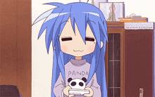
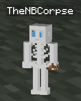

Table of Contents

My
name's Maddy (they/them), I'm an (unfortunately) American tech nerd and
gamedev enthusiast. I love everything from game & app development
to hardware repair to tech support to website creation, along with
playing games. I love making music too, I've got a collection of music
from past and current projects over on the Music tab. I stream somewhat often on YouTube too, feel free to come say hi during a Splatoon set or request a song during a coding stream.
My tastes are definitely inspired a lot by growing up playing Super
Mario Bros 3, Super Paper Mario, Mario Kart Wii, and Zack & Wiki:
Quest for Barbaros' Treasure on the family Wii. I really like games
with stylized artstyles and high amounts of creativity and loathe
pay-to-win games. Nowadays some of my favorite games are Minecraft,
Splatoon 3, Metroid Prime Remastered, and Guilty Gear: Strive (though
I'm certainly not very good at it lol).
Outside of my online nerdy activities I like offline nerdy activities
such as strategy games, cooking, baking, Legos, and petting cats and
dogs.
Back
when I bought my Nintendo 2DS I needed to make a Nintendo Network ID,
and didn't really have an online name to use. My Minecraft skin at the
time was a derpy skeleton I made after discovering how cool Bastion
Remnants are (still one of my favorite structures to this day), so I
combined "Corpse" from the skeleton skin with "NB" from being an enby
tomboy, and added "The" to make it more distinctive or whatever.

(The brown pixels are because I love chocolate cake.)
I
use Construct 3 for programming, BeepBox for music and sound effects,
paint.NET for image viewing and that and the Construct 3 Animations
Editor for editing, Windows Notepad (Classic) for text file editing,
DaVinci Resolve for video editing, and KompoZer to make this site.
Other apps and programs I recommend are VLC Media Player for music and
videos, Firefox with uBlock Origin for usable web browsing, LibreOffice
to not have to deal with whatever the fuck is up with Google Docs, and
WinAero Tweaker to make Windows 11 function properly and look good.
(There's a noticeable trend of me liking free and open-source tools that are quite user-friendly lol)
Back to top...